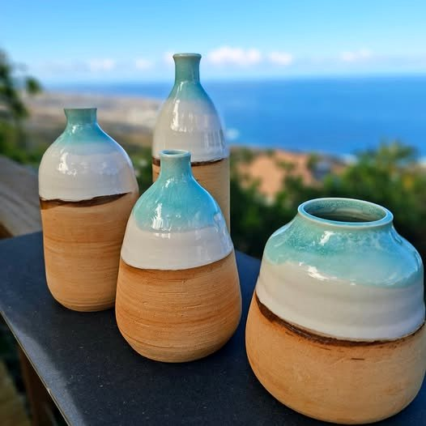
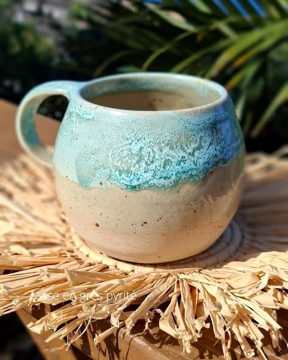
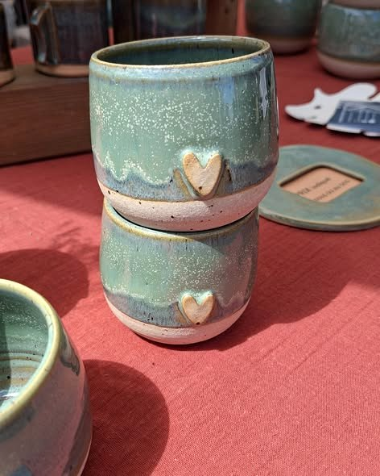
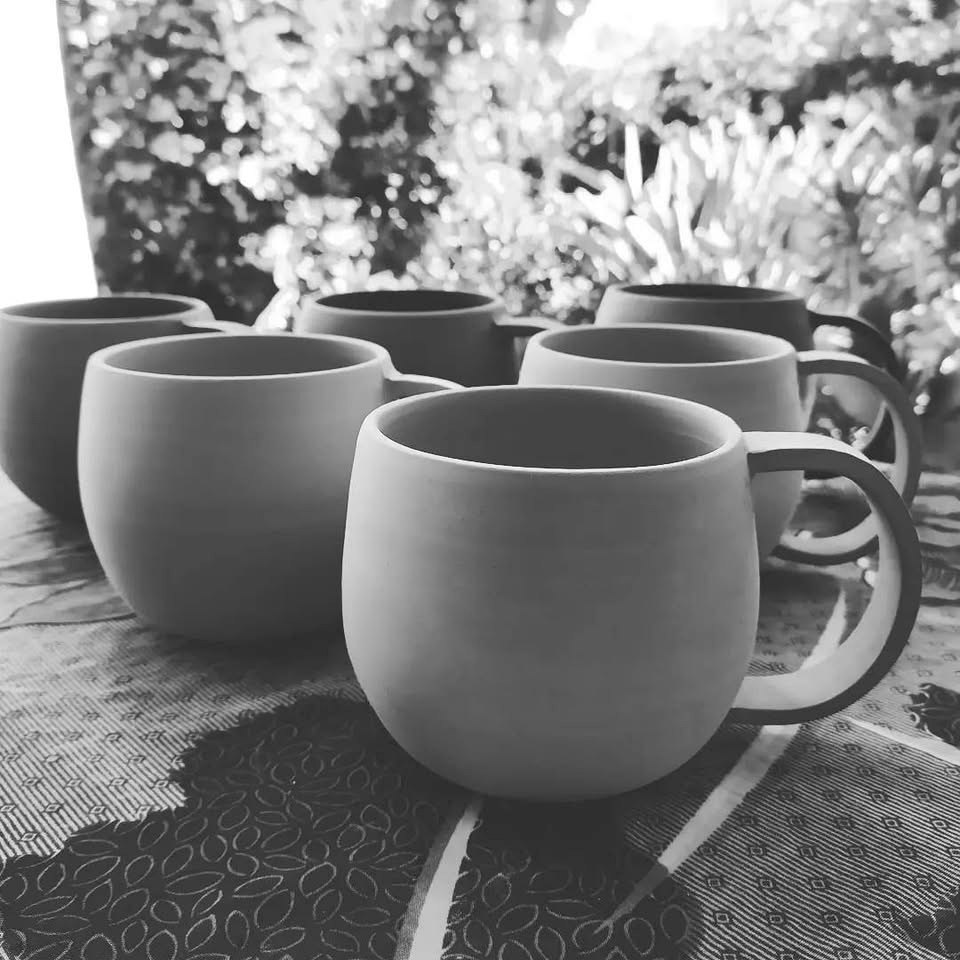
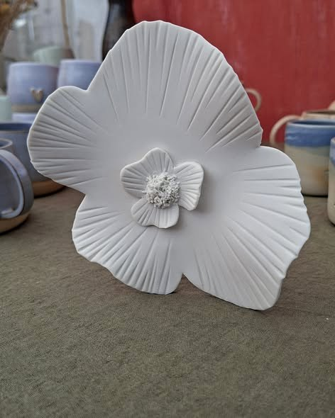
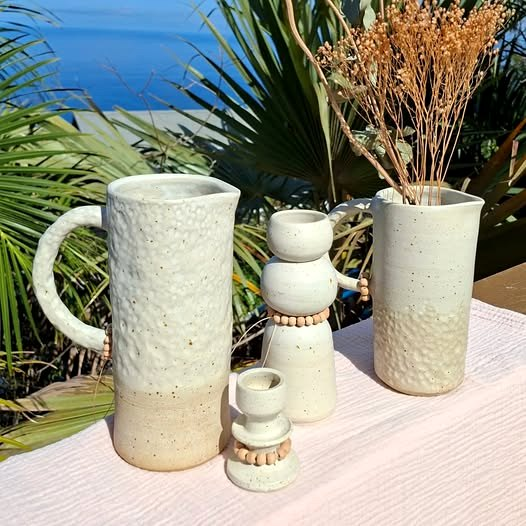
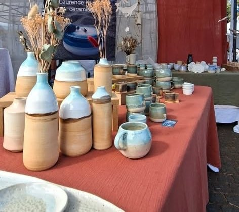

Grès et porcelaine façonnés par Laurence : vaisselle, objets de décoration, bijoux, et un cours pour mettre les mains dans la terre.

Sur les hauteurs de Saint-Leu, aux Colimaçons, Kréa'Ter est un atelier de poterie : tournage, modelage et sculpture.
Vaisselle, objets décoratifs et bijoux en céramique, en séries très limitées : des émaux turquoise qui glissent vers la terre cuite, des tons crème, des pièces pour la table comme pour la maison.


Bols, mugs et vases montés au tour, pièce après pièce.
Des formes libres, façonnées à la main.
Fleurs et objets de décoration, comme de petites œuvres.
Un cours hebdomadaire pour adultes, à l'atelier.



Un cours hebdomadaire pour adultes à l'atelier, et des rendez-vous sur les marchés, comme le Marché de la céramique du village artisanal de l'Éperon, avec une vingtaine de céramistes.

Le stand, les jours de marché
Démonstration : sur la page finale, la demande arrive directement dans votre boîte mail.